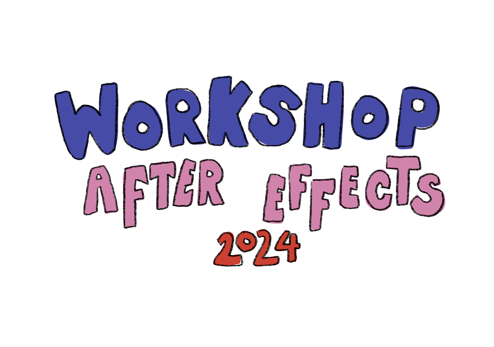

L'inconnu
Réalisations d'une séquence avec After Effects pendant une semaine. L'objectif étant de s'améliorer sur le logiciel en question. Il nous était demandé de réaliser une séquence pouvant amener à réfléchir quant aux enjeux et comportements que l’on voit apparaitre autour des supports numériques. L’idée est de sensibiliser sur les dérives potentielles qui peuvent en découler.

Focus du projet: